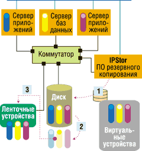
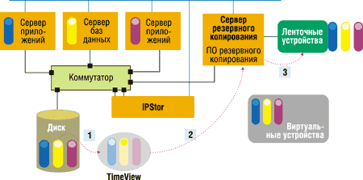

Александр Глинских,
к.т.н.
Первые статьи цикла см. "BYTE/Россия" № 1'2004 и № 2'2004.
Программные средства управления данными - это крупнейший сегодня сегмент на мировом рынке ПО для систем хранения. В этот сегмент входят ПО резервного копирования и восстановления, ПО архивирования, ПО систем иерархического хранения данных (HSM), комплексные пакеты.
Программные средства резервного копирования и восстановления условно делят на следующие основные группы:
- системы начального уровня, часто входящие в состав ОС и обладающие простейшей функциональностью (в основном это бесплатные и условно-бесплатные программы);
- системы среднего уровня, при приемлемой цене обладающие достаточной функциональностью (они наиболее распространены в настоящее время);
- комплексные системы верхнего уровня, предназначенные для работы в сложных гетерогенных средах.
Кроме того, существуют также средства резервного копирования и восстановления, встраиваемые в различные приложения (например, в базы данных).
Ведущие производители ПО резервного копирования и восстановления - компании Veritas Software, IBM/Tivoli, HP, Computer Associates, EMC (особенно после поглощения Legato Systems), BakBone Software, Dantz Development и т. д. Бесспорные лидеры здесь - компании Veritas Software и IBM/Tivoli, совместно занимающие сейчас более половины данного рынка.
Архивирование данных, в отличие от резервного копирования, осуществляется по инициативе самих пользователей, а не системного администратора, поэтому жестких регламентов проведения архивирования для всей корпоративной сети обычно не предусматривается. Основные производители специализированного ПО архивирования - компании ADIC, Microtest, Astarte, Tracer Technology и т. д.
ПО систем иерархического хранения данных (HSM) предназначено для увеличения доступной дисковой емкости. Поэтому оно обеспечивает физическую миграцию (перемещение) данных на другие уровни хранения (например, на носители на магнитных лентах) с сохранением возможности обращения к ним (c помощью специальных указателей). Ведущие производители ПО HSM - компании IBM/Tivoli, HP, CA, Veritas Software, Legato Systems и т. д.
Комплексные пакеты ПО управления данными позволяют решать большинство вышеперечисленных задач. Основные конкуренты в данной области - компании Legato Systems (теперь дивизион корпорации EMC) с ПО Networker, Veritas Software с продуктом NetBackup и IBM/Tivoli с ПО Storage Manager.
Основные производители ПО управления даннымиРазработкой ПО управления данными занимаются сотни компаний в мире. Вот лишь некоторые из этих компаний (перечислены в алфавитном порядке, в скобках указаны их продукты):
|
Ведущие производители и их продукты
Мы кратко рассмотрим некоторые из программных средств управления данными, получившие определенную известность и на российском рынке.
Veritas Software
Бесспорный лидер рассматриваемого сегмента, корпорация Veritas Software (http://www.veritas.com), предлагает обширный набор решений для управления данными.
В состав семейства программ NetBackup входят не только известные всем системным администраторам программные средства резервного копирования и восстановления NetBackup, но и различные полезные опции:
- NetBackup Vault обеспечивает автоматизированную ротацию магнитных лент с архивами на удаленные площадки (для восстановления данных после катастроф);
- NetBackup Storage Migrator - пример программы управления иерархическим хранением данных;
- NetBackup Bare Metal Restore обеспечивает автоматическую переустановку ОС на сервере (в том числе Microsoft Windows на сервер с измененной конфигурацией) в случае катастрофы и восстановление данных пользователей в корпоративной сети. Эта кросс-платформная технология была разработана компанией The Kernel Group, которую Veritas Software поглотила в феврале 2002 г.
Veritas Backup Exec - семейство популярных программ для резервного копирования в среде Microsoft Windows, предназначенных для малых и средних предприятий. Следует отметить, что Veritas Software лидирует на мировом рынке в сегменте ПО обеспечения сохранности данных в Microsoft Windows (более 50% этого сегмента).
Специальный программный менеджер Veritas Global Data Manager предназначен для централизованного управления большим количеством удаленных серверов резервного копирования NetBackup и Backup Ехес.
Рассмотрим более подробно ПО Veritas NetBackup, представляющее собой комплексный пакет программных продуктов резервного копирования, архивирования и HSM для гетерогенных сред. Изначально ПО NetBackup предназначалось для центров обработки данных крупных предприятий с удаленными филиалами (с большим числом клиентов, серверов резервного копирования и централизованным управлением резервным копированием). Позднее были выпущены версии Veritas NetBackup для средних и малых предприятий, а также для мобильных пользователей и пользователей настольных ПК. Последняя актуальная версия Veritas NetBackup - 5.0 (выпущена в ноябре 2003 г.).
Veritas NetBackup обладает всеми основными возможностями, присущими и прочим комплексным пакетам программ управления данными от других производителей (следует заметить, что за считанные годы они ушли по своей функциональности невообразимо далеко от первых программ резервного копирования). Это:
- централизованное (в том числе удаленное) администрирование на базе политик (набора критериев, позволяющих выполнять резервное копирование не всей системы, а определенной ее части, определять стратегию хранения данных и т. д.);
- удаленное копирование данных;
- управление выполнением резервного копирования (полного, дифференциального, инкрементального) по расписанию для каждого клиента (возможно, нескольких клиентов одновременно);
- модульная наращиваемая архитектура;
- чтение и запись нескольких потоков данных (до 32) на одном стримере;
- поддержка большинства распространенных ОС (Windows NT/2000, основных клонов Unix, NetWare и т. д.), основных СУБД и корпоративных приложений;
- управление доступом к резервным копиям для различных групп пользователей (авторизация доступа);
- внесетевое (через SAN) и внесерверное резервное копирование;
- наличие графического интерфейса и интерфейса командной строки;
- встроенное журналирование с уведомлением о возникающих проблемах;
- уведомление клиентов о выполнении резервного копирования;
- поддержка различных устройств хранения (ленточных, магнитооптических и дисковых) от разных производителей.
Особенность NetBackup - его четырехуровневая архитектура. Программный менеджер Global Data Manager обеспечивает централизованное управление несколькими доменами памяти (в том числе удаленными), в состав которых входят мастер-сервер и до нескольких медиа-серверов. Мастер-сервер отвечает за резервное копирование клиентских данных и централизованно управляет медиа-серверами и программными агентами. Медиа-серверы осуществляют локальное резервное копирование. И, наконец, программные агенты на клиентских компьютерах выполняют резервное копирование данных с серверов и рабочих станций.
Дополнительно ПО NetBackup (например, версии DataCenter) имеет такие полезные возможности, как создание виртуальных копий данных (snapshots) с помощью опции FlashBackup и дисковое резервное копирование.
IBM/Tivoli
Второе место на рынке комплексных программных пакетов управления данными прочно удерживает компания IBM/Tivoli (http://www.tivoli.com). Для управления данными IBM/Tivoli предлагает также многофункциональную клиент-серверную программу Tivoli Storage Manager (TSM) - она широко известна, поэтому мы рассмотрим ее очень кратко, - и несколько дополнительных программных модулей.
Основные функции TSM таковы:
- управление (в том числе на базе политик) данными, устройствами хранения и носителями;
- генерация отчетов и мониторинг системы;
- обеспечение сохранности данных.
Главное назначение TSM - централизованное управление резервным копированием и восстановлением данных в гетерогенных средах и в сетях хранения SAN. Следует отметить, что в TSM можно проводить резервное копирование только новых и измененных файлов, благодаря чему сокращается продолжительность этой процедуры и экономятся дисковые емкости. Кроме того, возможность совместной работы с ресурсами хранения (одной или несколькими ленточными библиотеками) сразу для нескольких серверов TSM повышает эффективность их использования. Данные для резервного копирования, архивирования и восстановления передаются прямо через SAN Fibre Channel (в обход локальной сети), что также повышает производительность системы.
Возможности ПО TSM значительно расширяются при совместном использовании с интегрированными с ним модулями Disaster Recovery Manager, Space Manager и Data Protection.
Модуль Disaster Recovery Manager работает под управлением сервера TSM и предназначен для автоматизированного контроля за всеми перемещениями магнитных носителей, на которых хранятся резервные копии, чтобы в случае необходимости легко было определить их местонахождение. Он также обеспечивает выполнение всех необходимых действий по восстановлению отказавшей системы после катастрофы.
Модуль Tivoli Space Manager - еще один пример программы управления иерархическим хранением данных, суть которого, как мы помним, состоит в автоматическом перемещении (в соответствии с заданными критериями) редко используемых файлов на уровни хранения с меньшей стоимостью носителей, что помогает освободить дисковое пространство на сервере.
Семейство модулей Data Protection позволяет быстро выполнять резервное копирование и восстановление различных приложений и баз данных (не останавливая их работы).
Legato Systems
Хотя компания Legato Systems (http://www.legato.com) входит сейчас в состав корпорации EMC, мы все же рассмотрим ее программные продукты управления данными отдельно от линейки решений EMC, поскольку они сохранили свое название и были внедрены более чем на 29 тыс. предприятий по всему миру еще до поглощения компании Legato.
Флагманский программный продукт Legato Systems для управления данными - Legato Networker, прямой конкурент в первую очередь Veritas NetBackup. Но, в отличие от NetBackup, ПО Legato Networker изначально создавалось для рабочих групп и средних предприятий (без возможности работы с распределенными филиалами крупных организаций), и лишь затем в нем была реализована функциональность и для крупных предприятий.
Таким образом, Legato Networker - это еще один распространенный комплекс клиент-серверных программ управления данными (выпускаемый в версиях Workgroup Edition, Network Edition и Power Edition), обладающий широким диапазоном применения (от настольных ПК до гетерогенных сред распространенных ОС). В нем реализованы функции резервного копирования, архивирования и HSM, а также вся функциональность, присущая комплексным пакетам ПО управления данными.
Как и в TSM, в Legato Networker есть возможность выполнения резервного копирования баз данных, приложений и файлов в так называемом горячем режиме (без прерывания их работы) - с помощью опции BusinesSuite Module, а также приложений и файлов на серверах Windows NT и NetWare - с помощью опции Open File Manager. Следует также отметить, что ПО Legato Networker оптимизировано для быстрой модификации индексных файлов каждого клиента, что позволяет заметно сократить продолжительность резервного копирования. Важное свойство Legato NetWorker - поддержка технологии NDMP, разработанной Legato совместно с компанией Network Appliance и предназначенной для резервного копирования данных с NAS-серверов ведущих производителей на ленточные библиотеки (через SAN). Отметим, что Legato Systems уделяет серьезное внимание ПО резервного копирования для NAS-серверов. Свидетельством этому служит, в частности, поглощение ею в феврале 2002 г. компании OTG Software, известной своими программными решениями в данной области.
Примером HSM-решения от Legato Systems может служить программа Legato Disk Xtender.
Сomputer Аssociates
Не меньшей известностью в мире, чем рассмотренные выше комплексные программы управления данными, пользуется и пакет ПО резервного копирования и восстановления BrightStor ARCserve Backup (ARCserveIT). Эта технология была разработана компанией Cheyenne (основатели которой несколько лет назад учредили фирму FalconStor), а затем приобретена корпорацией Computer Associates (CA, http://www.ca.com) и стала распространяться под торговой маркой BrightStor. Последний выпущенный релиз - BrightStor ARCserve Backup r11.
В сферу применения ПО BrightStor ARCserve Backup входят как рабочие группы и отделы крупных предприятий, так и большие центры обработки данных. Оно может устанавливаться и на портативных либо настольных ПК, и на гетерогенных серверах. В основном функциональность этого пакета программ соответствует возможностям рассмотренных выше программных средств: централизованное управление резервным копированием и восстановлением одновременно на нескольких серверах ARCserve в гетерогенной среде (ОС Microsoft Windows, NetWare, Unix, Linux и MAC OS X), работа на базе политик, многопотоковое резервное копирование, дисковое резервное копирование, создание виртуальных "мгновенных снимков", копирование баз данных и корпоративных приложений на лету (в том числе открытых файлов), работа с системами хранения DAS, SAN, NAS, опция восстановления после катастроф, поддержка технологии HSM и многое другое.
Семейство программ резервного копирования и восстановления BrightStor имеет и такие полезные свойства, как наличие ПО виртуализации хранения на магнитных лентах Vtape, позволяющего оптимизировать работу с ленточными библиотеками; "интеллектуальная" система генерации тревожных сообщений и уведомлений с автоматической доставкой их по электронной почте, факсу и на пейджер; использование технологии push-агентов - специальных программ, устанавливаемых на удаленных серверах и сокращающих время ожидания центрального сервера за счет нахождения на удаленных серверах файлов, подлежащих резервному копированию, и их преобразования в формат, готовый к записи на магнитную ленту, и т. д.
Ряд отраслевых аналитиков считают ПО BrightStor ARCserve Backup лучшим решением резервного копирования в среде Microsoft Windows.
Hewlett-Packard
Решение для управления резервным копированием HP Omniback от корпорации Hewlett-Packard (http://www.hp.com) входит в семейство программ HP OpenView. Оно применяется в вычислительных средах разного масштаба и степени сложности - от одного сервера рабочей группы с подключенным к нему стримером до больших гетерогенных центров обработки данных (Windows NT, NetWare, Unix и Linux) с территориально распределенными филиалами, поддерживающих разные сетевые архитектуры хранения. HP Omniback присущи все обычные для современных программных средств резервного копирования и восстановления возможности: онлайновое резервное копирование баз данных и приложений, резервное копирование открытых файлов, работа в кластерных конфигурациях, внесерверное и внесетевое резервное копирование и т. д.
Одна из дополнительных возможностей ПО HP Omniback - поддержка устройств хранения от HP, обладающих функциональностью OBDR (one button disaster recovery), ускоряющей восстановление системы после катастроф. Кроме того, при использовании HP Omniback можно выполнять резервное копирование даже в среде, не поддерживающей ОС Windows NT, NetWare, Unix и Linux (при помощи монтирования томов и NFS).
BakBone Software
Нельзя не сказать несколько слов и о ПО резервного копирования и восстановления BakBone NetVault от компании Bakbone Software (http://www.bakbone.com). Оно достаточно широко распространено на мировом рынке и обладает практически той же функциональностью, что и рассмотренные программные решения управления данными верхнего уровня. Недавно выпущена уже седьмая версия программы.
Существуют выпуски NetVault для рабочих групп и малых предприятий, а также для средних и крупных предприятий. Поддержка работы в гетерогенных средах - обязательное условие успешности программных средств на мировом рынке, и NetVault не является исключением. Unix, Windows NT/2000, Windows Server 2003, Linux и NetWare - это стандартный набор операционных систем, с которыми совместимо большинство современных программных средств резервного копирования и восстановления, к числу которых относится и BakBone NetVault.
Отметим также, что в BakBone NetVault 7.0 реализован еще ряд возможностей. Это, например, средства управления политиками (Policy Management), применяемыми как к одному клиенту, так и ко всем сразу; управление доступом пользователей к данным (User Level Access); поддержка SAN/NAS (DirecSAN). Можно использовать виртуальные дисковые библиотеки (VDL), при помощи которых резервные копии передаются прямо на локальный жесткий диск или дисковый массив, подключенный к SAN (это значительно ускоряет операции резервного копирования).
BakBone NetVault допускает внесетевое резервное копирование для вычислительных сред как с SAN, так и без SAN: с помощью опции NetVault Library Sharing серверы и клиенты подключаются к ленточной библиотеке напрямую, в обход локальной сети. Функция TurboVault позволяет повысить производительность резервного копирования за счет оптимального распределения ресурсов памяти между центральным процессором и NetVault (в зависимости от производительности стримера).
Yosemite Technologies
Yosemite Technologies (http://www.tapeware.com), основанная в 1996 г., - пример компании, старающейся "застолбить" себе место на рынке (не говоря уже о том, чтобы догнать лидеров рынка ПО управления данными) за счет высокой технологичности и инновационности решений, а также их более низкой стоимости. Yosemite Technologies продвигает ПО резервного копирования и восстановления TapeWare.
Компания позиционирует свой программный продукт как подходящий для широкого диапазона приложений - от настольных ПК (для домашних пользователей и малых предприятий) до крупных предприятий и центров обработки данных. В апреле 2003 г. была выпущена 7-я версия TapeWare с поддержкой ОС Sun Solaris и FreeBSD Unix (помимо Windows, Linux и NetWare), благодаря чему ПО TapeWare получило выход и на рынок Unix-систем.
Одна из главных особенностей ПО TapeWare - оригинальная технология зонирования, обеспечивающая простоту управления резервным копированием/восстановлением и надежную защиту данных. Суть этой технологии в том, что во время установки TapeWare рабочие станции, серверы корпоративной сети и другие устройства группируются в зоны. В каждой зоне создается своя база данных, в которой сохраняется вся информация о действиях по резервному копированию и восстановлению в данной зоне, а также информация о каждом пользователе и его правах доступа к информации. Для различных областей корпоративной сети можно создавать множество таких зон, однако каждая система резервного копирования должна принадлежать только одной зоне. При этом в TapeWare невозможно передать данные резервного копирования, созданные в одной зоне, в другую (т. е. носители с данными резервного копирования, созданные в одной зоне, нельзя использовать в другой зоне). Зоной TapeWare могут быть объявлены даже стримеры и носители данных, и к ним также будет оформляться допуск пользователей.
Еще одна заслуживающая внимания особенность TapeWare - при работе с ним не требуется подключать стримеры к серверам, так как можно использовать любой стример или ленточный автозагрузчик в корпоративной сети. Все подробные сведения об используемых магнитных носителях и их содержимом хранятся в базе данных TapeWare. При необходимости можно восстанавливать файлы Windows NT в среде NetWare и наоборот.
Важная возможность TapeWare - автоматическая маршрутизация данных. Хотя и допускается назначать конкретное устройство хранения для выполнения задания резервного копирования, в TapeWare встроены протоколы, с помощью которых файлы маршрутизируются оптимальным образом. При первой попытке резервного копирования система будет обращаться к устройству хранения, подключенному к тому компьютеру, с тома которого считываются данные. Если это устройство хранения недоступно, то TapeWare просканирует сеть в поисках доступных устройств и выберет подходящее.
Следует отметить, что даже гранды отрасли хранения данных (например, HP и Seagate) включают ПО TapeWare в комплект поставки своих решений. По мнению отраслевых аналитиков, ПО TapeWare хорошо подходит для гетерогенных корпоративных сетей, в которых необходимо решать задачи распределенного резервного копирования в разных отделах (с высокой степенью контроля доступа к информации).
Dantz Development
Retrospect, разработка компании Dantz Development (http://www.dantz.com), - характерный пример программ резервного копирования и восстановления для домашних пользователей, рабочих групп, малых и средних предприятий (работающих в средах Windows, Macintosh и Red Hat Linux). ПО Retrospect широко распространено в мире: например, оно используется в таких компаниях, как British Telecom, DaimlerChrysler, Motorola, Nortel, Pixar, Walt Disney и т. д.
Совместная работа ПО управления с другими программами
Резервное копирование и восстановление можно выполнять и с помощью программных средств, специально не предназначенных для этих целей. Рассмотрим этот вариант на примере ПО IPStor от компании FalconStor (http://www.falconstor.com), основные возможности которого рассматривались в предыдущей статье.
ПО IPStor не способно самостоятельно выполнять резервное копирование и восстановление данных (т. е. оно не запускает процедуры резервного копирования на магнитную ленту и не управляет ленточными устройствами хранения), однако оно обеспечивает резервное копирование блочного уровня на жесткие диски и предоставляет ряд дополнительных возможностей при совместном использовании с ПО резервного копирования и восстановления третьих фирм.
Например, опция TimeMark/TimeView позволяет создавать по расписанию "мгновенные снимки" (образы) дисковых систем хранения и журналировать их версии, практически не задействуя ресурсы серверов, к которым подключены данные дисковые массивы. Эти "мгновенные снимки" могут храниться как на том же дисковом массиве, так и на удаленной системе хранения. При этом "полная" резервная копия создается всего один раз, далее сохраняются лишь изменения. Можно также восстановить "мгновенный снимок" TimeView дисковой системы хранения, не задействуя дополнительного дискового пространства.
Следует отметить, что в ПО IPStor предусмотрены варианты совместного использования его cпециальных опций ZeroImpact Backup и HyperTrac Backup с распространенным на рынке ПО резервного копирования от третьих фирм. Эти опции позволяют значительно ускорить выполнение полного, инкрементального и дифференциального ленточного резервного копирования файлов активных данных и полных образов дисковой системы хранения, причем не оказывая влияния на работу всей системы.
Опция ZeroImpact Backup предусматривает исполнение ПО резервного копирования и восстановления (BakBone NetVault, Syncsort Backup Express и Veritas NetBackup - для ОС Linux, BakBone NetVault и Veritas NetBackup - для ОС Solaris) на сервере IPStor и полностью снимает нагрузку, связанную с обработкой процессов резервного копирования, с серверов приложений (рис. 1). ПО резервного копирования от третьих фирм "видит" виртуальные диски IPStor, как raw-диски. Сеанс резервного копирования диска начинается при разрешении использования виртуального диска IPStor (на рис. 1 этот шаг обозначен цифрой 1). Шаг 2 - ПО IPStor создает "мгновенный снимок" виртуального диска. Шаг 3 - с помощью IPStor (опции ZeroImpact Backup) ПО резервного копирования копирует содержимое виртуального диска на ленточные устройства хранения.
Отметим, что при использовании ZeroImpact Backup на магнитную ленту можно копировать только образы дисков, но не файлы.
|  | Рис. 1. Схема совместной работы ПО IPStor (с опцией ZeroImpact Backup) и ПО резервного копирования от третьих фирм.
|
В свою очередь, опция HyperTrac Backup позволяет ускорить резервное копирование файлов или полных образов дисковой системы хранения, выполняемое с помощью практически любого из известных программных средств резервного копирования и восстановления от третьих фирм, работающего на выделенном сервере резервного копирования (рис. 2). Никакого влияния на работу системы при этом также не оказывается.
На шаге 1 (см. рис. 2) ПО IPStor создает "мгновенные снимки" TimeView для дисковых ресурсов хранения. Шаг 2 - "мгновенный снимок" TimeView отображается для сервера резервного копирования в качестве дискового ресурса хранения. На шаге 3 сервер резервного копирования выполняет процедуру резервного копирования на ленточные устройства хранения.
|  |
| Рис. 2. Схема совместной работы ПО IPStor (с опцией HyperTrac Backup) и ПО резервного копирования от третьих фирм.
|
Кроме того, в IPStor доступны агенты резервного копирования для баз данных и систем корпоративной электронной почты (например, Microsoft Exchange, Oracle, Lotus Notes, Sybase, IBM DB2 UDB и Microsoft SQL Server), что обеспечивает целостность транзакций и согласованность "мгновенных снимков".
Использование программных средств, подобных IPStor, совместно с ПО управления данными не только повышает производительность работы и делает ее удобнее, но и позволяет сократить расходы, связанные с приобретением для каждого сервера push-агентов, агентов открытых файлов, опций SAN, опций совместного использования стримеров/ленточных библиотек, программных агентов резервного копирования и т. д.
Перспективы рынка
Ожидается, что производители ПО управления данными будут обращать все большее внимание на рынок малых и средних предприятий, объем которого, по прогнозу отраслевых аналитиков, в течение ближайших четырех лет должен увеличиться до 18,5 млрд долл.
Продолжится расширение функциональности ПО управления данными. В то же время наращивание функциональности ведет к значительному увеличению объемов пакетов ПО, сложности управления ими и стоимости, из-за чего ряд пользователей могут отказаться от приобретения таких комплексных программных продуктов (и здесь не поможет даже удобный пользовательский интерфейс).
Не прекратится передел рынка ПО управления данными. Первую скрипку здесь будет играть корпорация EMC, которая, лидируя сейчас на всем рынке ПО для систем хранения (см. таблицу), собирается стать лидером и в сегменте ПО управления данными. Еще одно свидетельство намерений EMC - недавнее поглощение ею компании Legato Systems (кто следующий?).
Отраслевые производители продолжат создание интегрированных программно-аппаратных решений для управления данными. Здесь отметим, например, планы компаний Veritas Software и Network Appliance по интеграции ПО Veritas NetBackup с системами хранения NetApp NearStore ATA.
Лидеры мирового рынка ПО для систем хранения (III квартал 2003 г.)
| Производитель | III квартал 2003 г. | II квартал 2003 г. | Прирост (III кв. по отношению ко II кв.), % | ||
| доходы, млн долл. | доля рынка, % | доходы, млн долл. | доля рынка, % | ||
| EMC | 431 | 26,1 | 399 | 25,2 | 7,9 |
| Veritas | 343 | 20,7 | 325 | 20,5 | 5,4 |
| Computer Associates | 145 | 8,8 | 142 | 8,9 | 2,5 |
| IBM | 134 | 8,1 | 134 | 8,5 | -0,5 |
| Hewlett-Packard | 116 | 7,0 | 107 | 6,8 | 8,3 |
| Прочие | 485 | 29,3 | 479 | 30,2 | 1,2 |
| Все производители | 1653 | 100,0 | 1587 | 100,0 | 4,2 |
| Источник: IDC, декабрь 2003 г. | |||||
Окончание следует